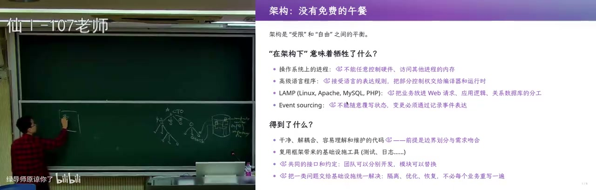
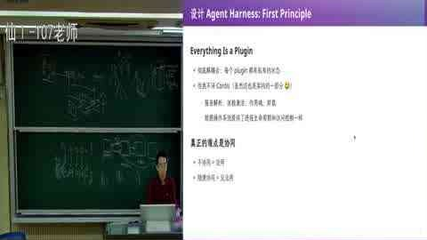
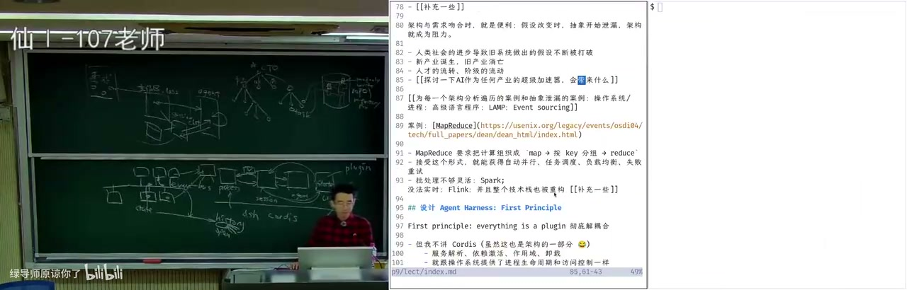

《DeepSeek Harness [09]》详细学习笔记
BV144nc6KEA4 · 89:24 · 南京大学蒋炎岩（B站「绿导师原谅你了」） 依据 2224 段完整字幕 + 时间轴整理；格式参考 DSH 技能
video-to-notes（章节拆解 / 知识地图 / 重点标记 / 速查卡）。
一句话结论
这节课用「150 行 agent demo 为什么不能当产品」作引子，讲透两件事：需求会杀死架构；DSH 用 microkernel + append-only session + event bus 把能力让给插件生态。但插件只能消除 accidental complexity，消除不了 essential complexity。
知识地图
mindmap
root((DeepSeek Harness [09]))
问题
agent 组织化
CTO 与 sub-agent
版本控制锁
demo 不能当产品
网络中断
会话恢复
客户端/服务端一致
需求
PRD 膨胀
MVP 验证假设
需求变更杀死架构
架构
受限 vs 自由
LAMP
event sourcing
MapReduce
DSH
microkernel
Cordis
session 唯一事实
event bus
pre-step 可改事件
生态
creator mode
WPS/Excel bridge
动态 UI
语义冲突
官方章节时间轴
| 时间 | 章节 |
|---|---|
| 00:00–23:27 | 需求 |
| 23:27–38:21 | 架构 |
| 38:21–1:05:56 | 设计 |
| 1:05:56–1:29:24 | 生态 |
关键画面



分段大纲
| # | 章节 | 时间（约） | 核心内容 |
|---|---|---|---|
| 0 | 开场：agent 时代，git 不够用了 | 00:00–10:50 | 组织架构、并行 task、版本控制锁 |
| 1 | 150 行 demo：能玩，不能当产品 | 10:50–20:00 | 3D 校园、断网、重试、支付状态 |
| 2 | 从 demo 到产品：PRD、MVP、需求变更 | 20:00–30:00 | WorkBody、slop、GrokBot |
| 3 | 架构的本质：受限 vs 自由 | 30:00–40:15 | LAMP、event sourcing、MapReduce |
| 4 | DSH 的世界模型 | 40:15–50:00 | Cordis、session、event bus、pre-step |
| 5 | 演示：TUI、PDF、VS Code 式侧边栏 | 50:00–58:30 | 扔掉 UI slots、共享状态、better sidebar |
| 6 | Creator mode：运行时拆装插件 | 58:30–68:20 | 动态插件生命周期、现场许愿 |
| 7 | WPS/Excel bridge：超级应用 AI 原生 | 68:20–76:00 | 锁对象、hand off、写回 |
| 8 | 动态 UI：HTML+JS 卡片 | 76:00–84:00 | 成语接龙、五子棋、1.5KB 协议 |
| 9 | 代价与结论：release nothing | 84:00–89:23 | 语义冲突、essential complexity、生态 |
0. 开场：agent 时代，git 不够用了（00:00–10:50）
Anthropic 说 git 已经不够用。蒋炎岩的解释是：有了 agent 之后，一个学生立刻拥有公司级组织架构——你是 CTO，下面有产品、前端、后端 agent，每个还能再带 sub-agent。
- ⭐ 这时版本控制要处理的不再是单线程提交，而是大量并行 task。
- 他设想给 repo 加「锁」：只读锁、写锁、refactor 锁；小的、互相独立的 fix 可以并行。
- 🔧 可以借鉴操作系统的锁，以及数据库的乐观/悲观并发控制和 conflict detection。
- ⚠️ 这不是「git 要死了」，而是「git 的假设是单人/单线程，agent 把假设打破了」。
💡 核心提炼： agent 把「一个人写代码」变成「一个人管理一个组织」，版本控制必须从「提交」升级为「并行任务的协调」。
1. 150 行 demo：能玩，不能当产品（10:50–20:00）
他在高铁上用一句话让 150 行的 mini agent 做一个「比例基本真实的南大仙林校区三维图」。Agent 从 OpenStreetMap 爬数据、自己建模：
- 图书馆的俯视几何基本正确；
- 十层的计算机楼高度明显不对；
- 大门被当成了一栋楼，门口铺满树；
- ⭐ 加提示词、烧十倍 token 可以修得更好。
这个 demo 证明 agent 能完成不平凡的任务，但它假设网络永远稳定。高铁断网后进程直接终止，150 行代码没有会话保存、没有恢复、没有断点续跑。
真实产品还要面对：
- 🔧 API 中断后的重试间隔：1s → 2s → 4s → 8s 的指数退避；物理故障可能要两三分钟才恢复。
- ⚠️ 客户端/服务端状态不一致：支付请求发出后，服务端已把订单提交给银行/航空公司，手机却断网了，App 只能转圈并显示「订单处于我不知道的状态」。
💡 核心提炼： demo 的假设是「网络稳定、进程不崩、状态可丢」；产品的假设是「这些都会发生」。两者之间是 essential complexity。
2. 从 demo 到产品：PRD、MVP、需求变更（20:00–30:00）
一个真正的 agent 产品需要：多项目 dashboard、项目相关 skills、工具调用的沙箱与权限、账号与数据管理……于是有了一份很长的 PRD。
他让 AI 假装做一个对标 WorkBody 的产品。AI 会先列用例：
- 把本周项目记录整理成周报；
- 列出延期事项；
- 生成 Word 文件。
再列功能：历史检索与任务复用、模板与偏好、执行预算与用量、账号与数据管理、外部内容隔离、用户反馈与问题诊断，以及大量非功能需求。
- ⚠️ 直接让 agent 实现这份 PRD，大概率会陷入 slop——agent 有强烈的「先把任务完成」倾向，不会想未来。
- ⭐ MVP 的价值是让假设被 validate；假设一破，需求就膨胀。
- ⭐ 需求会杀死架构：你已经按 WorkBody 写完 50 万行并上线，老板突然说下一版照 GrokBot 做——交互从「左侧项目栏 + 右侧面板」变成「拉群、agent 当人、有记忆、可定时」。之前所有需求假设的根基崩塌。
- 大厂靠拉通对齐、闭环沉淀、保守架构保证交付质量；而 DSH 生态里，GrokBot 火了几周就有人像素级复刻出 dsh bot，还能加 multi-agent dashboard。
💡 核心提炼： 需求变更不是例外，是常态；架构必须为「假设会变」留余地，否则 50 万行会变成负债。
3. 架构的本质：受限 vs 自由（30:00–40:15）
时间倒回 2026 年 6 月 10 日 23:00，DSH 的第一个提交：一个 microkernel architecture、link MVP requirement analysis，什么都没有，连 CLAUDE.md 都是后来才不需要的。
他对比了两种设计路径：
- 对着需求设计：agent 会为「工作区」建 class，设计 workspace–session–agent 的交互，用数据库存 session。很自然，但架构会被需求绑死。
- 从 first principle 设计：操作系统不需要知道每个进程干什么，但能把进程组合起来。所以 DSH 选择
everything is a plugin。
架构的本质是受限与自由之间的取舍：
- ⭐ 约束划出模块边界，让 sub-agent 可以并行开发；代价是需求变化时抽象泄漏、难维护。
- ⚠️ 如果每个模块都是进程、随便 message passing，架构很干净很自由，但「没有任何用」——没有约束，什么时候发什么消息都不确定，等于没有架构（actor model 的反面教材）。
几个案例：
- LAMP：单机能扛时最好；服务 10 亿人时每个点都是瓶颈，只能分库分表、再拆服务。
- Event sourcing：概念干净、可回退、可审计；但性能更难，而且「教务员想悄悄让一个学生强行毕业」这种 hack 当前状态的需求很难办，因为事件历史会留下谁 committed 的记录。
- MapReduce（2004，Jeff Dean & Sanjay）：把编程模型限制成 map 和 reduce，用户只写这两个函数，框架负责排序 shuffle、分布式执行和机器故障容错（最多 2000 台机器、每 task 100MB 内存）。代价是只适合离线批处理，实时数据撑不住，后来才有 Spark、Flink。
💡 核心提炼： 架构不是「画得越干净越好」，而是「用限制换协作」；限制和需求匹配时是便利，假设一变就是阻力。
4. DSH 的世界模型：Cordis、session、event bus（40:15–50:00）
DSH 的 first principle 是操作系统式的：
- Cordis 负责服务解析、依赖激活、插件 load/unload；
- 插件声明依赖，unload 时依赖自动卸载；
- 资源回收像操作系统回收进程资源。
真正的难点是协同，于是 DSH 建了一个所有插件共享的「世界模型」：
- ⭐ session 是 append-only 的事件日志，是唯一 ground truth；
- ⭐ 模型历史不单独存储，由事件派生（event sourcing）；
- ⭐ event bus 上挂插件，事件按领域分类，类型不匹配 TypeScript 直接编译不过；
- 🔧 插件可以监听甚至修改尚未 persist 的事件（如 agent 的 pre-step）——这是关键能力；
- 🔧 LM inference 有一个 open entry，token 不断流入、不 persist，但可被观察，所以能做实时 thinking、token/cost 统计；
- 第一方提供 session、agent、UI slots 等抽象，trajectory 就是 session history 的另一种投影；
- 插件大部分状态留在本地，只把希望别人看见的东西发上 event bus。
💡 核心提炼： DSH 不是「一堆插件」，而是「一个所有插件共享事实的世界模型」；session 是事实，event bus 是协作接口，插件是投影。
5. 演示：TUI、PDF、VS Code 式侧边栏（50:00–58:30）
- Text UI：把 UI slots 全扔掉，只监听 session 事件，就能做 text UI，甚至和 web UI 共享状态。
- PDF reader：用事件 hook 注入生命周期。
- VS Code 式侧边栏：终端、git、side chat 都能作为插件加上去。
- better sidebar 这类插件证明了：只要看主 session、维护自己的状态，就能做出完整工作台，而不侵入系统。
💡 核心提炼： UI 只是 session 的一种投影；把 UI slots 换掉，DSH 就能变成 TUI、IDE、bot，甚至你没想到的形态。
6. Creator mode：运行时拆装插件（58:30–68:20）
- Creator mode 给插件 Cordis 权限，agent 运行时可以拆插件、加插件，因为 DSH 有全动态插件生命周期。
- 现场演示：让 agent 现场写插件，给 token usage 旁加一个超大号显示；agent 一边跑一边往 event bus 上挂东西。
- 这和 Wake up/Buddy 这类「预设需求」产品不同：creator mode 把「创造插件」本身交给使用者。
💡 核心提炼： 动态插件生命周期把「软件发布」变成「运行时许愿」；架构的上限由第一方抽象决定。
7. WPS/Excel bridge：给超级应用装 AI 原生能力（68:20–76:00）
- WPS/Excel bridge 只支持三个操作：锁住对象、把对象 hand off 给模型、把修改拿回来。
- 就把一个没有 AI 能力的超级应用接进生态；任何能嵌在网页里的应用都可以。
- 他举了个人 database 插件 + WPS 填表的例子：论文列表、学生信息、个人资料由生态里的工具协作完成，不需要 computer use、不需要疯狂截图。
💡 核心提炼： 不需要重写超级应用，只需要一个很薄的 bridge，把「对象」交给模型，再把结果写回；生态的能力就接上了。
8. 动态 UI：HTML+JS 卡片（76:00–84:00）
- 模型输出带 JS 的 HTML 卡片，卡片里的按钮通过 JS 往 event bus 注入事件，回到模型上下文。
- 现场演示成语接龙、五子棋：五子棋状态在 UI 里，落子由模型思考决定。
- 插件用
context.systemPrompt注入 1.5KB 协议，让模型知道要生成特定标记的 div。 - ⚠️ demo 有 bug（五子棋下在线上），不是成熟产品；但它展示了「生成式 UI」的可能性。
💡 核心提炼： 动态 UI 把「模型输出」变成「可交互界面」，再把界面事件注回上下文——这是 generative UI 的雏形。
9. 代价与结论：release nothing（84:00–89:23）
- event bus 只统一了事件和类型，插件自己的状态仍在本地。
- ⚠️ 插件之间语义会冲突：装十个「上下文压缩一半」的插件，输出会被压到千分之一；一个 hook 要停、一个要继续，谁先谁后没有规定。
- 这些 essential complexity 解决不了，插件只减少 accidental complexity。
- ⭐ DSH 发布时几乎「release 了一个 nothing」，把剩下的交给开源生态；任何 super app 都可以用很小的 bridge 接入，享受整个生态。
- 他提到自己在做 agent OS，思路与 DSH 类似，但位于更底层，可以和 DSH 并行。
💡 核心提炼： 插件不是万能的，架构也不是；好的架构能把「协作」变成生态，但语义冲突、hook 顺序、压缩叠加这些 essential complexity 仍然要人来解决。
关键数字与例子
| 内容 | 数字/细节 |
|---|---|
| mini agent | 150 行 |
| 视频时长 | 89:24（5363 秒） |
| DSH 第一个提交 | 2026-06-10 23:00 |
| MapReduce 论文 | 2004 年，最多 2000 台机器，每 task 100MB 内存 |
| 修 3D 校园图 | 约 10 倍 token |
| 动态 UI 协议 | 1.5KB systemPrompt |
| 十个压缩插件叠加 | 输出被压到约 1/1000 |
| WorkBody 假设崩塌 | 已写 50 万行，老板改需求照 GrokBot 做 |
🃏 速查卡
| 概念 | 一句话 | 标记 |
|---|---|---|
| agent 组织化 | 你是 CTO，sub-agent 是团队，版本控制要协调并行 task | ⭐ |
| demo vs 产品 | demo 假设网络稳定；产品要处理断网、恢复、状态一致 | ⚠️ |
| MVP | 不是缩小版产品，是验证假设的工具 | ⭐ |
| 需求变更 | 需求一变，旧架构的假设就崩塌 | ⚠️ |
| 架构 | 用限制换协作；太自由等于没有架构 | ⭐ |
| MapReduce | 用 map/reduce 限制换容错与并行 | 🔧 |
| session | append-only 事件日志，唯一 ground truth | ⭐ |
| event bus | 插件共享的协作接口，类型不匹配编译不过 | 🔧 |
| pre-step | 插件可修改尚未 persist 的事件，注入上下文 | 🔧 |
| 插件边界 | 只减少 accidental complexity，不解决语义冲突 | ⚠️ |
| release nothing | 把生态交给开源，super app 用薄 bridge 接入 | ⭐ |
适合谁看 / 怎么用
- 给 DSH 写插件的人：重点看第 4、6、7、8 章，理解 session、event bus、pre-step、UI slots 和 creator mode。
- 设计 agent 产品的人：重点看第 1、2、3 章，把「demo 假设」和「产品假设」列成 checklist。
- 架构师：重点看第 3、9 章，理解「受限 vs 自由」和 essential complexity 的边界。
- 学生/复习：先看知识地图和速查卡，再按章节回看视频。
我的判断
这场最值钱的不是「DSH 架构真好」，而是它把「架构 = 用限制换协作」说透了。你要是只记住 everything is a plugin，回去大概率会写出一个谁都能发消息、谁都不知道该干什么的漂亮垃圾。
⚠️ 另外，这是课堂 raw 录像，demo 有 bug，节奏快；把它当「架构思路课」，别当 API 文档。